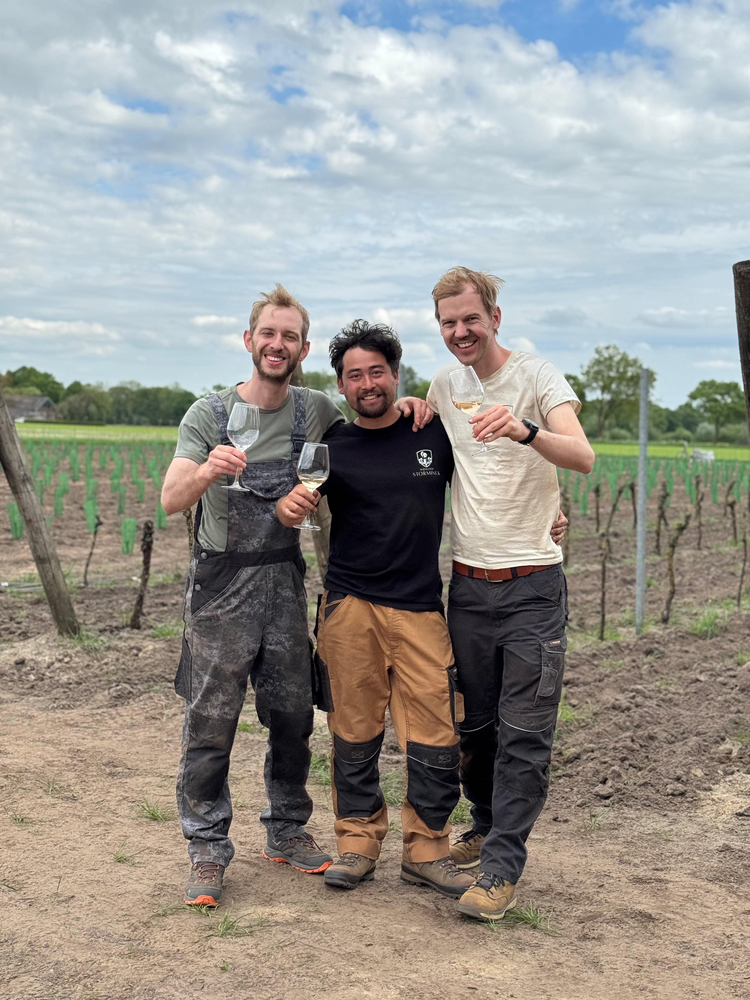

<div class="carousel-item active">
  <div class="container my-5">
    <div class="blog-card bg-dark text-white rounded-4 shadow">
      <div class="row g-4 align-items-center">

        <!-- VIDEO -->
        <div class="col-md-4 d-flex justify-content-center">
          <div class="video-thumbnail" onclick="openVideoModal('assets/mp4/Post_life could be a dream.mp4')">
            <video muted loop playsinline>
              <source src="assets/mp4/Post_life could be a dream.mp4" type="video/mp4" />
            </video>
            
            <span class="play-button"><i class="fa-solid fa-play"></i></span>
          </div>
        </div>

        <!-- TEKST -->
        <div class="col-md-8">
          <h3 class="fw-bold">Test</h3>
          <p>
            test.<br>
            <br>
            Een PowerPoint. Twee jeugdvrienden.<br>
            En drie dertigers met een droom.<br>
            <br>
            Op een gure winteravond stond ik daar — voor mijn beste vrienden uit de brugklas — met een presentatie die eigenlijk veel meer was dan een plan. <br>
            En toen gebeurde het.<br>
            <br>
            Geen twijfel. Geen mitsen of maren. Alleen pure energie.<br>
            Vanaf dat moment wisten we het zeker:<br>
            <br>
            🛠️ We gaan samen de mooiste wijngaard van Nederland bouwen.<br>
            🍇 Vanuit vriendschap. Vanuit passie. Vanuit de bodem omhoog.<br>
            ✨ Deze beelden zijn tekenend voor de afgelopen twee jaar. Ze vertellen het begin van een avontuur — en we nemen jullie graag mee!<br>
            <br>
          </p>
        </div>
      </div>
    </div>
  </div>
</div>
